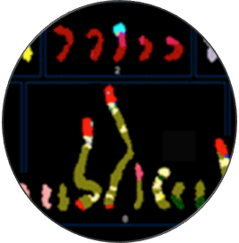

| The SK-BR-3 cell line is one of the most important models for HER2+ breast cancers, which affect one in five breast cancer patients. SK-BR-3 is known to be highly rearranged although much of the variation is in complex and repetitive regions that may be underreported. Addressing this, we sequenced SK-BR-3 using long-read single molecule sequencing from Pacific Biosciences, and develop one of the most detailed maps of structural variations (SVs) in a cancer genome available with nearly 20,000 variants present, most of which were missed by prior efforts. Surrounding the important HER2 locus, we discover a complex sequence of nested duplications and translocations, suggesting a punctuated progression. Full-length transcriptome sequencing further revealed several novel gene fusions within the nested genomic variants. Combining long-read genome and transcriptome sequencing enables an in-depth analysis of how SVs disrupt the transcriptome and sheds new light on the complexity of cancer progression. |  |
| » | Complex rearrangements and oncogene amplifications revealed by long-read DNA and RNA sequencing of a breast cancer cell line Nattestad et al. (2017) bioRxiv. doi: https://doi.org/10.1101/174938 | |
| » | Accurate detection of complex structural variations using single molecule sequencing Sedlazeck, Rescheneder et al (2017) bioRxiv. doi: https://doi.org/10.1101/169557 | |
| » | SplitThreader: Exploration and analysis of rearrangements in cancer genomes Nattestad et al (2016) bioRxiv. doi: https://doi.org/10.1101/087981 | |
| » | Ribbon: Visualizing complex genome alignments and structural variation Nattestad et al (2016) bioRxiv. doi: https://doi.org/10.1101/082123 | |
| » | Raw PacBio and Illumina reads are available in the NCBI SRA under under BioProject PRJNA476239 |
| » | Reads aligned with NGMLR: reads_lr_skbr3.fa_ngmlr-0.2.3_mapped.bam |
| » | Variants discovered with Sniffles: reads_lr_skbr3.fa_ngmlr-0.2.3_mapped.bam.sniffles1kb_auto_l8_s5_noalt.vcf.gz |
| » | SplitThreader analysis of Copy number variants + long range Sniffles variants: http://splitthreader.com |
| » | Ribbon display of SKBR3 structural variations: http://genomeribbon.com |
| » | FALCON assembly of PacBio reads: skbr3.falcon.pa_ctg.fa.gz |
| » | Assemblytics analysis of FALCON assembly: SKBR3_PacBio_Falcon_Assembly.Assemblytics_structural_variants.bed.gz |
| » | Illumina PE550 reads aligned with BWA-MEM: SKBR3_550bp_pcrFREE_S1_L001_AND_L002_R1_001.101bp.bwamem.ill.mapped.sort.bam | |
| » | Delly SVs: SKBR3_550bp_pcrFREE_S1_L001_AND_L002_R1_001.101bp.bwamem.ill.mapped.sort.bam.delly_noalt.vcf.gz | |
| » | Lumpy SVs: SKBR3_550bp_pcrFREE_S1_L001_AND_L002_R1_001.101bp.bwamem.ill.mapped.sort.bam.lumpy_noalt.vcf.gz | |
| » | Manta SVs: SKBR3_550bp_pcrFREE_S1_L001_AND_L002_R1_001.101bp.bwamem.ill.mapped.sort.bam.manta_noalt.vcf.gz | |
| » | PopIns SVs: skbr3.popins.vcf.gz | |
| » | SURVIVOR consensus SVs: SURVIVOR_1k_min2_min50bp.vcf.gz | |
| » | Allpaths-LG assembly of the Illumina reads: skbr3.allpaths.assembly.fa.gz skbr3.allpaths.contigs.fa.gz | |
| » | Assemblytics analysis of ALLPATHS-LG assembly: SKBR3_Illumina_AllpathsLG_Assembly.Assemblytics_structural_variants.bed.gz |
|